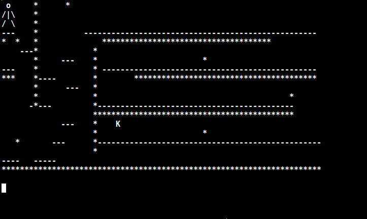
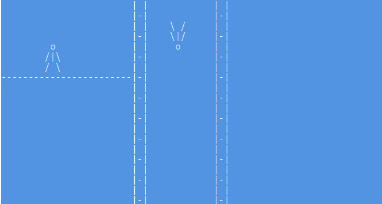

|
Capturas



Es un juego de plataformas 2D escrito en Java. El objetivo del juego es cruzar al siguiente nivel usando comandos de git como poderes del personaje principal.
| Tecla/Caracter | Función |
|---|---|
| a | Moverse a la izquierda |
| s | Moverse hacia abajo |
| w | Saltar/Moverse hacia arriba |
| d | Moverse a la derecha |
| : c | Abre la linea de comandos. En la linea de comandos podras ejecutar comandos de git. |
Para instalarlo es necesario descargar el .jar o exe que se encuentra en download y seguir los pasos de instalación en el readme.md